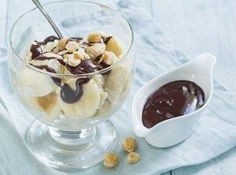

Sundae ijs met banaan
Dit is een lekker nagereht voor het einde van een dineer.
Ingrediënten
- 12 bollen vanille ijs
- 100 gr chocolade puur
- 100 ml slagroom
- 1 theelepel suiker
- 2 eetlepels gehakte hazelnoot
- 2 bananen
Materialen
- 4 Glazen of kommetjes.
- Pannetje met kom (au bain-marie)
Bereidingswijze
- Verhit een laagje water in een pannetje en zit hier een kommetje op.
- Verwarm hier de slagroom in.
- Voeg de suiker en pure chocolade toe en laat deze al omscheppend smelten.
- Snijd de banaan in plakjes. Doe 3 bollen ijs in een coupe. Voeg de plakjes banaan hier en daar toe.
- Drizzel wat chocolade saus er over en bestrooi met gehakte hazelnoten. Ook lekker met een toef slagroom.

Tip:Zet er een lekker chocolade saus extra bij voor de mensen die dat willen.